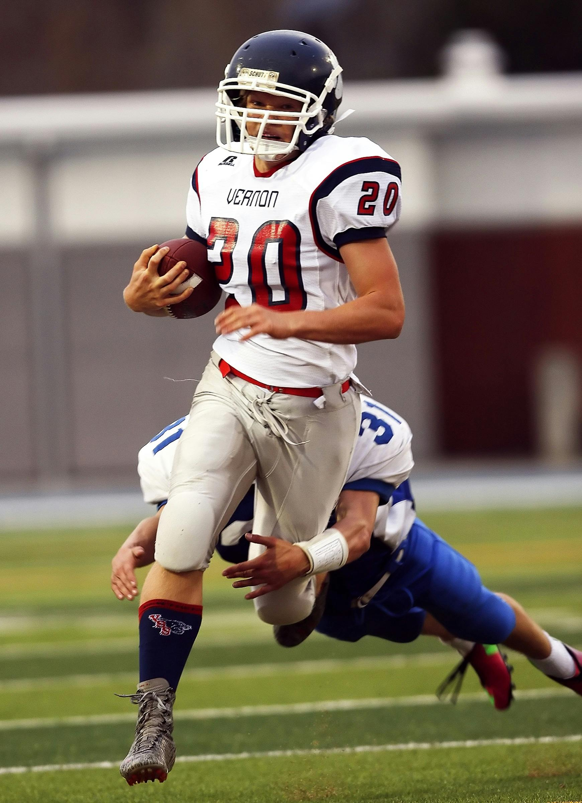
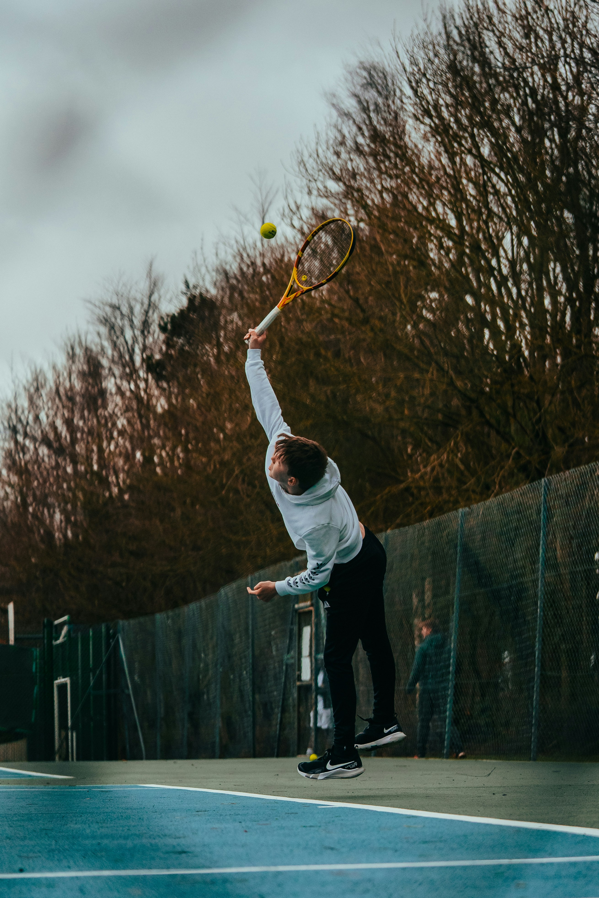

New Orleans host 2025 Superbowl
The Super Bowl LIX halftime show, officially known as the Apple Music Super Bowl LIX Halftime Show, is the upcoming halftime entertainment of Super Bowl LIX, which is scheduled to take place on February 9, 2025, at the Caesars Superdome in New Orleans, Louisiana. It will feature American rapper Kendrick Lamar as the headline performer. The show will be televised nationally in the U.S. by Fox, Fox Deportes, and NFL
Coaches break silence on recent firing of coach Brown

Dever Nuggets coach Michael Malone stated basketball team Sacramento Kings and owner Vivek Ranadive has "no class, no balls" for how they fired Coach Mike Brown Friday after the game.
2025 PGA Tour starts
Hideki Matsuyama opened the 2025 PGA TOUR season with his 11th career PGA TOUR title at The Sentry, and he made it a record-setting week on Maui. Matsuyama carded a four-round total of 35-under 257 at The Plantation Course at Kapalua, marking the lowest score in relation to par for a 72-hole PGA TOUR event. The Japan native posted rounds of 65-65-62-65 at the par-73 Kapalua venue to finish three strokes clear of Collin Morikawa.